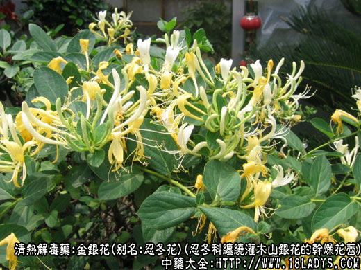
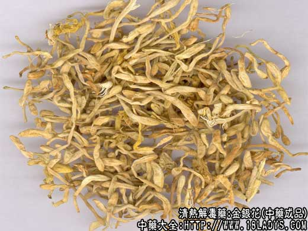
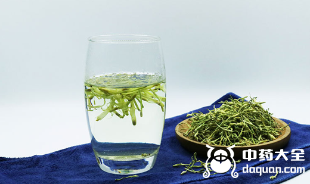
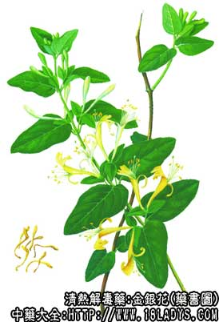

金银花为常用中药。一蒂两花二瓣，一大一小，始载《本草纲目》在忍冬项下。李时珍谓：本植物三、四月开花，长寸许，一蒂两花二瓣，一大一小，长蕊，初开时蕊及瓣俱白色，经二、三日色变黄，新旧相参，黄白相映，故呼“金银花”。现商品分南银花、东银花、山银花三种，下面我们来分辨这三种金银花图片。

金银花图片 种植

干金银花图片

金银花图片 泡水
别名：金银花、双花、二花、忍冬花、二宝花。
来源：为忍冬科多年生常绿缠绕灌木忍冬山银花以及同属多种植物忍冬的干燥花蕾。多为栽培，也有野生。
产地：南银花(密银花)：主产于河南省密县、尉氏、荥阳，登封等县。品质最好，产量较小多供出口外销。
东银花(济银花)：主产于山东省费县、平邑、苍山、蒙阴、沂水等县。品质较好，产量较大，供内销及出口。
山银花(土银花)：多产于广西、湖南、广东、湖北、安徽、四川、浙江、陕西、江苏、江西、贵州等省多属地产地销。其中广西、湖南产量较大，也向非产地提供产品。

性状鉴别：南银花：花蕾棒状，略弯曲。长约2～3厘米，上端直径约3毫米，下端直径约1毫米，顶端钝尖。基部常常有灰绿色小花萼，五裂，长约3～5毫米。花蕾黄白色，密生短毛茸。剥开花蕾可见雄蕊5枚，雌芯一枚，已开放的花朵全长可达5厘米，花冠作唇形裂，裂片多皱卷呈黄棕色。气芳香味微苦，其特点主要是花蕾枝条清晰，无开放花朵，花冠较厚而有骨气，颜色黄白而略带绿意，用手握之有顶手的感觉。
东银花：形味略与南银花同，唯花蕾微显粗大而轻泡，多带有已开放的花朵或偶有绿色叶片混杂其中。花蕾黄白色已开放的花朵黄棕色，弯曲较甚，枝条显混乱。握之无顶手感。
山银花：花蕾亦呈棒状，唯较细瘦、黄色，亦带有淡绿色或棕褐色的花苗已开放的花朵，全体少毛茸或不显毛茸，质坚脆握之易碎断，嗅之甜香，嚼之微酸苦而带涩。
以上三种银花，均以花蕾肥壮，青白或黄白色，开放花朵少，无梗叶者为佳。
主要成分：含肌醇、木犀草素、绿原酸。鞣质等。
清热解毒，其原理为：
1、抗菌。体外试验对金黄色葡萄球菌、溶血性链球菌、痢疾杆菌、伤寒杆菌、脑膜炎双球菌、肺炎双球菌等有抑菌作用，二，其酒精浸剂在1：1000,000浓度下对结核菌有抑菌作用，单味银花对小白鼠实验结核病有疗效。总的来说，金银花为作用较强的广谱抗菌中药。
2、抗病毒。用鸡胚法以体内直接试验和体内预防作用方法筛选，发现金银花有抗流感病毒的作用。
3、抗真菌。体外试验，金银花的水浸剂对铁锈色小芽胞癣菌等皮肤真菌有抑制作用。
4、收敛。鞣质起收敛作用，故急性肠炎也可用银花。
5、利尿。
此外，动物实验初步发现，金银花的有效成分能在体外与胆固醇结合，能减少家兔肠道胆固醇的吸收。
炮制：生用，或炒炭用。
性味：甘寒。
归经：入肺、心、胃经。
功能：清热解毒。炒炭凉血止血。
主治：外感风热，急性热病，痈肿疮毒热毒血痢。
临床应用：为治疗疮疡、泻痢和外感、热病的常用药。
1、用于治疗疮疡、痈疖而有红肿热痛者（即属于“阳症”）银花常不可少，取其有强力抗菌作用。轻者配连翘、紫花地丁等，方如银花解毒汤；稍重得，例如痈初起，疼痛较显著而未溃破，则须炙山甲、皂角刺等，促进脓肿消散或溃破，方如消疮饮。痈疽愈后口渴，也可用银花煎水代茶。对皮肤湿疹、疥癞等，银花也有一定的治疗作用。
2、用于治疗湿热泻痢(菌痢、急性肠炎等)可配黄芩、茵陈、白芍等，或用金银花单味，浓煎服。如为血痢，则须用银花炭。
3、用于治疗外感风热或热染性疾病早期，其证在表，具有发热、微恶风寒、头痛咽痛等证候，配连翘、淡豆豉、荆芥等，在清热解毒的同时，疏风解表，方如银翘散。
用量：常用量9~30g，治热痢要浓煎。治疮痈用量较大，一般用30g，症重时，有时用到每剂60～90g，也有人用到120g。
处方举例：1、银花解毒汤《疡科心得集》：银花30g、紫花地丁20g、赤茯苓9g、连翘9g、丹皮6g、黄连4.5g，夏枯草9g，犀角1g，水煎服。
2、消疮饮（旧名仙方活命饮）《外科发挥》：银花30g、炙山甲9g、皂角刺9g、赤芍9g、浙贝9g、防风6g、白芷4.5g、当归尾12g、乳香3g、没药3g、陈皮6g、天花粉12g、甘草6g，水煎服。服本方后偶有恶心呕吐反应，但无妨碍。
3、银翘散《温病条辨》：银花12g、连翘9g、荆芥9g、淡豆豉9g、牛蒡子9g、桔梗6g、薄荷3g(后下)、淡竹叶9g、芦根18g、甘草3g，水煎服。
注：南银花：多在四、五月份采摘，多选晴天的早晨上山采摘，采后立即平铺于山石上进行晾晒，当日即能晒干，如遇阴天则将采回的花蕾薄摊于竹席上通风阴晾，使之速干，保持花蕾的色泽鲜艳，因而品质较好。
东银花：因产量较大，采摘时间性强。因劳力不足，不能及时采摘，而使部分花蕾开，采摘量大，较忙乱，常有叶片混入，再加不能即采即晒，使其迅速干燥，故形色不及南银花。
山银花：多分散野生于江南各省，花期较早，三四月间采摘，这时江南地区已进入雨季，清晨上山采集，下午始能返回住地，采集的花蕾挤压于容器之中时间较久，交售给供销社后，因多雨不能及时晾晒，均采取用硫磺火进行熏蒸，尔后烘干。在熏烘过程中，银花受热成半熟或全熟状态，毛茸消失，花蕾胶化，故干燥后的山银花不显毛茸，但在显微镜下观察可见毛茸残留的痕迹小白点。
附：忍冬藤。
忍冬藤又名金银藤，是忍冬科植物金银花的当年幼嫩藤茎。茎圆柱形，细长。商品常数枝或十数枝盘卷成束状，直径约1.5～6毫米。表皮棕红色，表皮脱落者显灰绿色。老茎无毛无叶。嫩茎多密生毛茸，并常有椭圆形的对生叶，灰绿色或黄绿色，多破碎不全。藤茎坚脆，易折断。断面灰白色或黄白色，髓部有空隙，气微味淡。
以枝条均匀，内皮棕红色，质嫩带叶者为佳。
炮制：切段，生用。
效用：与金银花作用相同，兼清经络风热，而止经络疼痛。
附：银花藤(又名忍冬藤)，清热解毒的效力不及银花，但祛风活络的作用较强，除用于清热解表治疗感冒外，更常用于治疗风湿痹痛，常用量12~30g。
注：全国各地金银藤与忍科藤为同一药物，并认为嫩条带叶者好。但江苏、浙江则分为银花藤与忍冬藤两种，以嫩枝带叶者称银花藤，枝长较老、粗如笔杆、外皮脱落者称忍冬。
了解更多清热解毒的中药，为您推荐↓↓↓↓